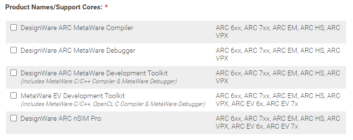

Getting Started
This section provides the first level of information the user needs to get started on how to use the SDK to design and to develop his own end application running on the EM9305 chip.
It covers the following topics:
the list of tools and their installation
the hardware setup and some recommendations on the DVK
how to build an application example
how to program and run an application example on the DVK
This SDK’s documentation comes along with the Implementer’s Guide document. Both provide comprehensive technical detailed information that help the end user to get started.
Prerequisites
Platform
The SDK is designed to be installed on a 64 bits Windows© 10 or newer host computer.
Software:
CMake 3.19 or later version
Python 3.8 to 3.11 (64 bit ONLY)
For debugging: Digilent Adept for using the Digilent JTAG
Metaware Synopsys toolchain for ARC EM7D
BLEngine tool (refer to BLEngine documentation)
ccache (optional) Speeds up local builds and used automatically if it is on the PATH. For more information, see https://ccache.dev/.
Hardware:
DVK full
Reference design with SMA antenna or with PCB antenna
Digilent JTAG (optional, for debugging purpose)
Design iterations (di)
The EM9305 IC is improved over the time. This results in the creation of new design iterations for one or more of the following reasons occur:
silicon bug fix
function improvement in the silicon
new added function
new ROM version
By default, the SDK builds an application for the latest design iteration.
For backward compatibility, this SDK can also be used to build for earlier design iterations (di04, di03). In this case, the correct design iteration must be specified when building the application. See the Implementer’s Guide for more details.
Note
The design iteration refers to a particular version of the silicon. A new design iteration may be issued to fix existing bugs and/or to add new hardware features. Thus, a design iteration integrates a ROM containing the startup code. This code may evolve over the time as bug fixes and/or new features are added. When this happens, a new design iteration is issued. Consequently, ROM versions and design iterations are linked in such a way that a new ROM version means a new design iteration. However, a new design iteration does not always mean a new ROM version.
Synopsys MetaWare Installation
To be able to compile and debug software for the EM9305, you will need to install MetaWare Development Toolkit for ARC processor cores ⩾ 2019.09.
Warning
Currently the full MetaWare license is necessary. The size of some examples exceeds the limit of MetaWare Lite.
EM-Microelectronic is also providing a dedicated version based on the 2022.09 version coming along with its own customized licence. This version does not have any limitation on the size of the compiled code and does not need to setup a dedicated license server. To get this version, please contact your EM-Microelectronic representative.
You can order and download a limited Metaware toolchain version here:
During the installation, you will be asked what you would like to install:
{kind=link}
Select the 3 first components:
DesignWare ARC MetaWare Compiler
DesignWare ARC MetaWare Debugger
DesignWare ARC MetaWare Development Toolkit
Hardware setup
Note
Your DVK is likely already programmed! You can skip this step unless you wish
to update the DVK firmware. Current firmware is found under
<sdk>\tools\dvk\EM9305_DVK_v1.4.0.bin
The picture below shows the DVK equipped with an EM9305 chip mounted on a reference design. It also shows the jumpers configuration that shall be set to ensure that the DVK is properly working. This picture also shows where to connect the mini-USB type connector and how the JTAG connector shall be also connected on its dedicated port (if available and for debug purpose only).
On central connector (GPIO connector), connect at least jumpers 00 to 05 (SPI slave interface + configuration mode entry) and EN.

Note
The D+(07) and D-(06) jumpers need to be connected to use GPIO6 and GPIO7. The antenna is not connected on the picture.
The configuration is step-down.
The DVK has to be programmed and needs to be switched to programming mode.
To do so, maintain the ISP button pressed and click on the RESET button.
A new disk is now available on your computer.
You can now copy/paste the BIN file (EM9305_DVK_v1.4.0.bin) located in <sdk>\tools\dvk to this disk.
Then click the RESET button to go back to standard mode.
Build
Once the SDK has been installed, the next step is to create the build environment by executing the init.bat
script from a terminal (for example Windows PowerShell, Cmder, MobaXterm, Terminus, …). This process shall be
done at least once on a fresh SDK installation and relies on the use of CMake tool.
For having this process easier, a dedicated script is provided:
.\init.bat
When run, this script creates a build folder, initializes the cmake build system and generates all the files
needed to build any application. All the generated files are stored within this build folder.
Then to build any target, the built process shall be done from inside the generated build folder.
By default, the CMake process will automatically try to find the path to the Metaware toolchain. For that, it
looks for the ccac (Linux) or ccac.exe (Windows) in the PATH variable which is user or system wide.
If a version of the Metaware toolchain has previously been installed, the process should be able to find it.
In order to compile all the examples (all the targets):
cd <sdk>\build
cmake --build . --target all
If you want to compile one example only, you can run the cmake command with the specified target.
For example:
cd <sdk>\build
cmake --build . --target printf_example
For a comprehensive list of targets:
cd <sdk>\build
cmake --build . --target help
It is possible to redirect the list of targets into a file like this:
cd <sdk>\build
cmake --build . --target help > targets_list.txt
Note
For the targets using the transport, if no extension is given (no _uart) the SPI transport is used.
Once this is built, in the folder <sdk>\build\projects\printf_example, an Intel hex file corresponding to the target binary
should be present (printf_example.ihex). This file is the one to be programmed in the NVM.
DVK programming - Monolithic binary image
You first need to connect the DVK full and check which COM port is opened.
A python script is available in tools\blengine to program the previously generated hex file to the EM9305 flash.
cd <sdk>\tools\blengine
python blengine_cli.py --port=COMYY run emsystem_prog ..\..\build\projects\printf_example\printf_example.ihex --progress
With YY = the COM port number of your DVK.
Note
Refer to EM9305 Lifecycle Control tab for information about all lifecycle operations.
It describes mechanisms to program NVM memory as well as NVM Info Pages.
It also describes a mechanism to reboot in various modes
After the execution of this script, the EM9305 is reset and the program should be running. In this example (printf_example), the GPIO7 should print the value of a counter every seconds.
Note
The printf_example will use GPIO7 as a UART transmit pin with a default baudrate of 115,200 baud. You will need to connect a 3.3V UART TTL adapter to the UART header Pin #2. There is no need to connect to the UART receive pin #3 given that the UART since in this example, any incoming character on this pin is discarded.
Note
If your application uses GPIO 0-5 not for SPI slave communication, the DVK SPI transport has to be disabled.
It’s possible to do that automatically after programming by using the --spi_disable option:
cd <sdk>\tools\blengine
python blengine_cli.py --port=COMYY run emsystem_prog ..\..\build\projects\printf_example\printf_example.ihex --progress --spi_disable
DVK programming - EM-Core and User application binary images
Unlike the monolithic binary image that was programmed above, another option is to program an EM-Core binary image into NVM, which provides all EM software functions for a customer application. The customer application is linked against the EM-Core symbol file. Thus, the customer application will be much smaller in size compared to the monolithic binary image.
Note
The customer application must link to the desired EM-Core symbol table. And the EM-Core binary image must be programmed into the EM9305 NVM.
You first need to connect the DVK full and check which COM port is opened.
Prior to programming this EM-Core, the NVM_bootloader image shall be programmed first if not already done. This can be achieved by issuing the following command line:
cd <sdk>\tools\blengine
python blengine_cli.py --port=COMYY run emsystem_prog ..\..\emcore\bin\nvm_bootloader\nvm_bootloader_base.ihex
This small firmware is programmed at the beginning of the NVM and fits in the first NVM page. It is directly called by the device boot sequence at startup or when resuming from a sleep period. This NVM-Bootloader is responsible for starting up any available firmware images stored in the NVM by checking these images integrity through a CRC check and by starting the right image based on the device configuration.
Then the EM-Core ihex file can be programmed in flash memory.
cd <sdk>\tools\blengine
python blengine_cli.py --port=COMYY run emsystem_prog ..\..\emcore\bin\vA.B.C\standard\emcore_standard.ihex --progress
With YY = the COM port number of your DVK and A.B.C = the version of EM-Core.
Note that the location from which the two above mentionned commands are issued is the folder where the Python script blengine_cli.py resides.
In the following example, the DVK can be accessed through the com port COM5:
cd <sdk>\tools\blengine
python blengine_cli.py --port=COM5 run emsystem_prog ..\..\emcore\bin\vA.B.C\standard\emcore_standard.ihex --progress
The next step is to program the end user application, or an application example. In the following example, the EMB FIT application example is programmed into the NVM by using the following command line:
cd <sdk>\tools\blengine
python blengine_cli.py --port=COMYY run emsystem_prog ..\..\build\projects\nvm_emb_fit\nvm_emb_fit_emcore.ihex --progress
With YY = the COM port number of your DVK.
Note that the application used as an example here is named nvm_emb_fit_emcore.ihex. This application precludes that the
version of EM-Core against which it has been linked is already programmed in the NVM. The iHex file does neither embed any
version of EM-Core nor any low level driver already part of the pre-installed EM-Core image. The file name containing ’emcore’
means that this application has been built and linked against EM-Core, not that it embeds a version of EM-Core.
After the execution of this script, the EM9305 is reset and the program starts running.
Use the debugger
Compile and program the software you want to debug. Then connect the JTAG connector on the JTAG socket.
Warning
The sleep mode must be disabled to be able to debug. At top of the nvm_main.c file, you need to include the global PML Configuration data structure as follows:
#include "pml.h";
In NVM_ConfigModules function, switching to the sleep mode can be disabled by setting the corresponding flag:
void NVM_ConfigModules()
{
...
// Prevent the system from switching to sleep mode
gPML_Config.sleepModeForbiden = true;
...
}
Warning
The JTAG must be enabled to be able to debug (by default it is disabled).
void NVM_ConfigModules()
{
...
// Enable JTAG.
GPIO_EnableJtag4Wires();
...
}
A batch script let you start the debugger:
cd <sdk>\tools\debug
.\debug.bat <path to sdk>\build\projects\printf_example\printf_example.elf
Note
The parameter (path to the elf file) can be a relative path. However, on some installation, this might not work.
In such a case, the absolute path shall be provided (C:\SDK\…).
You should then be able to set breakpoints and run the program in the debugger.
Since it is unfortunately not possible to use the debugger when the sleep mode is enabled, debugging while this mode shall be kept enabled can be done by using the printf library to send debug messages over the serial line at application runtime (refer to <sdk>\projects\printf_example for detailed information).
Note
When connecting to the device using the debugger through the JTAG probe, one might experience a connection failure. If this happens, repeat this operation. It should work then.